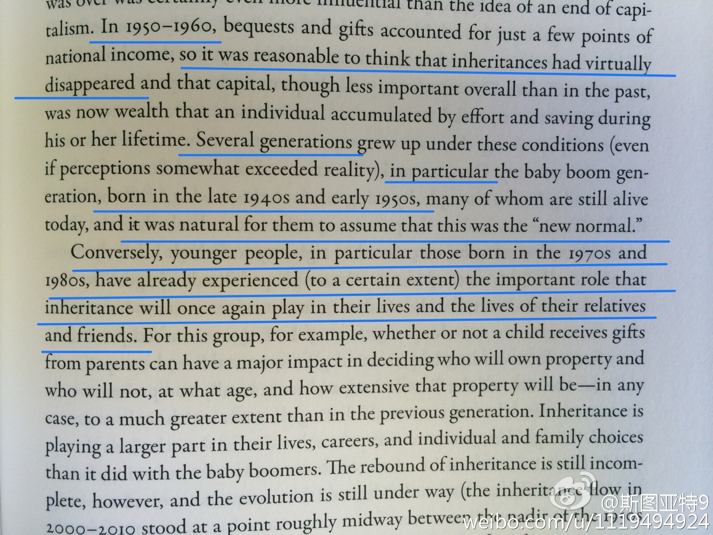
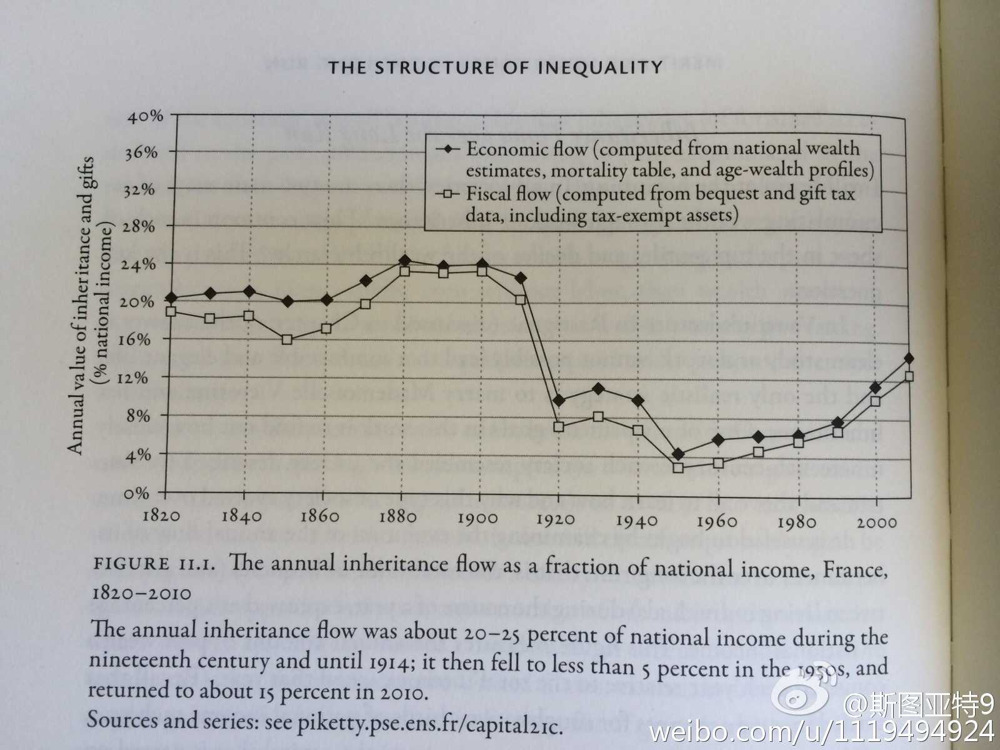

《二十一世纪资本论》的一段。大意是说1950，60年代财产继承变得对社会影响很小，所以40后50后很自然认为继承已经消失。但更年轻的一代，特别是70后和80后已经发现拼爹对于这代人的重要性。看上去咱中国真是紧跟发达国家发展的步伐啊！ 
真是拧吧：美国人比欧洲人在思想上更不重视贵族、社会等级，但其实欧洲社会比美国在财富上要平等得多。另一个拧吧的地方：美国人以美国梦为核心价值，欧洲人则多认为社会不公富人多数生来就富，但社会学者们的研究通常显示美国的阶层向上流动性低于欧洲。聊起美国和欧洲，经常被这两个拧吧绕进去。